Every image below is the reference phone crop from your board (left, or orange) against a screenshot of the working prototype at the same scale (right, or blue). The references come from the boards at 340 px wide, upscaled to 786 px, so they look softer than the implementation; that softness is the board's resolution, not a design difference.
All six views
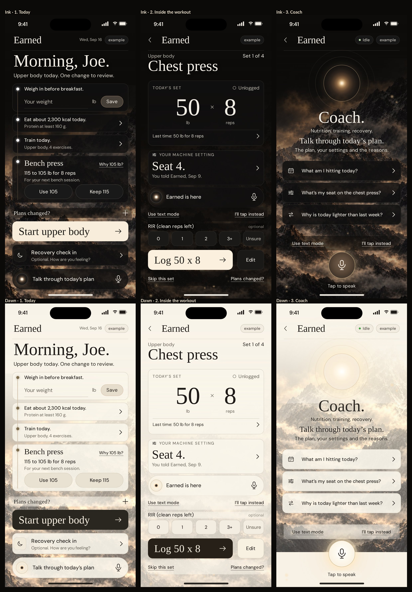
Side by side
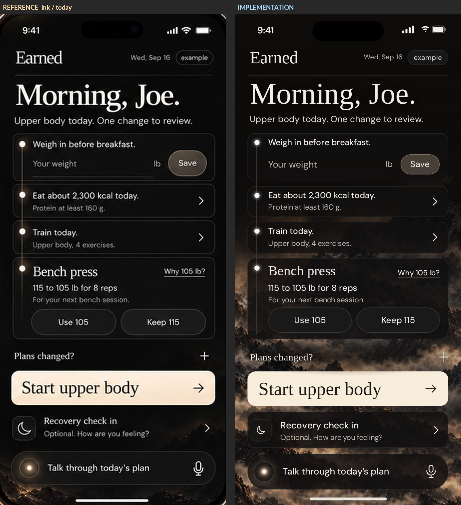
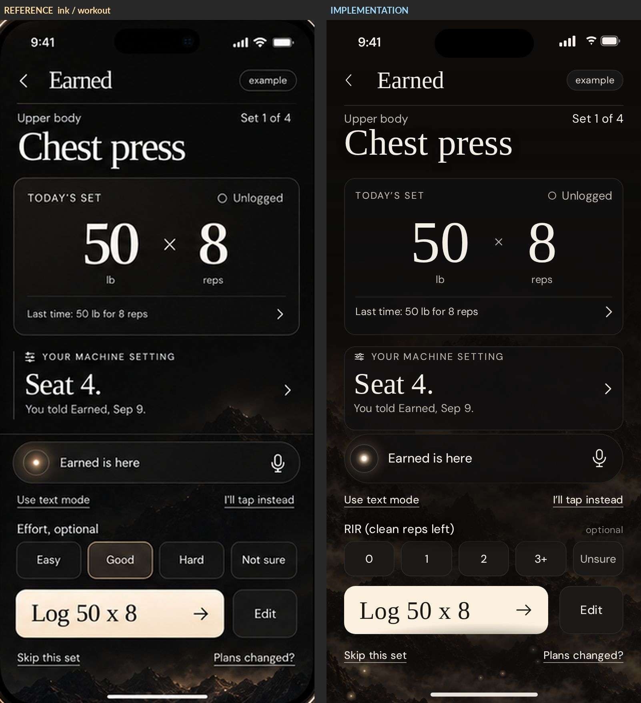
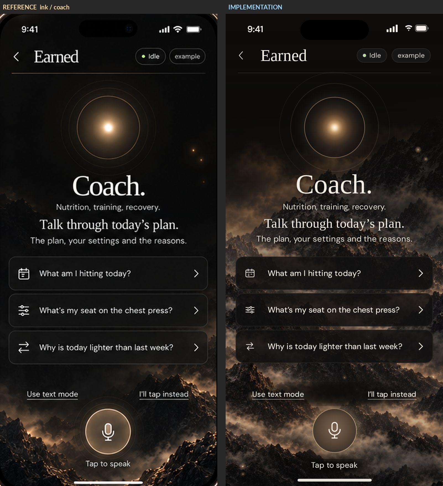
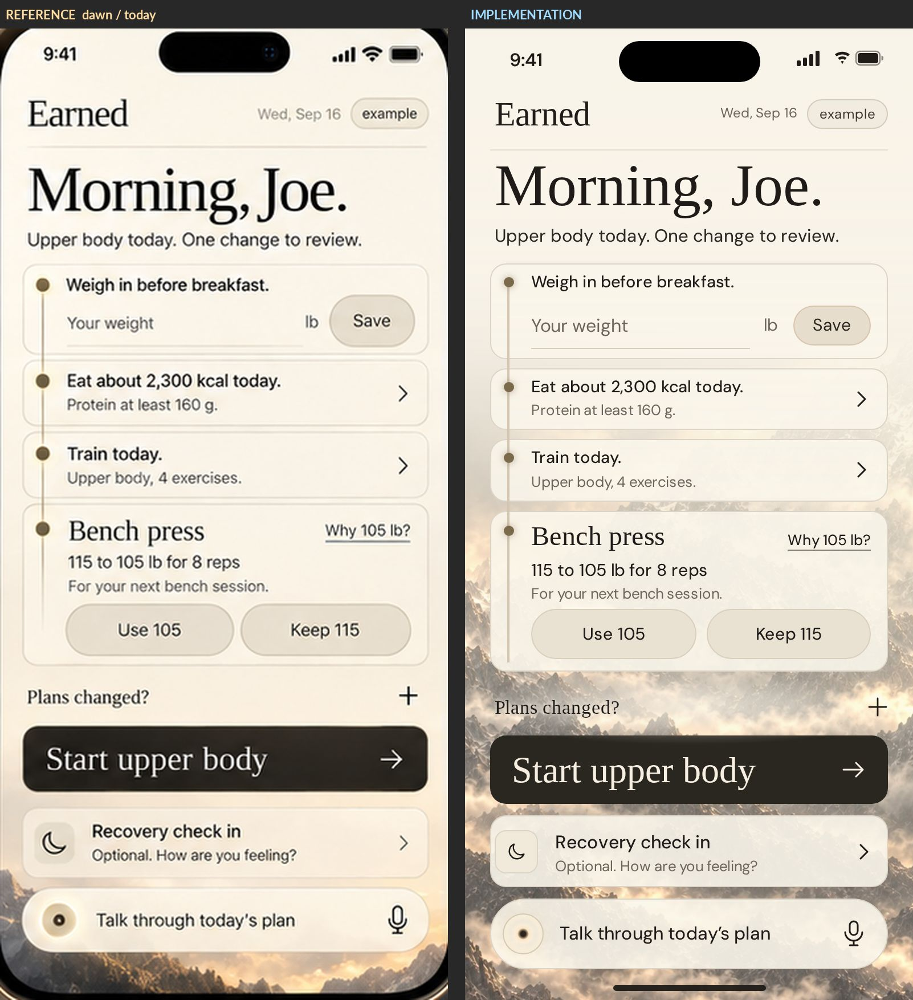
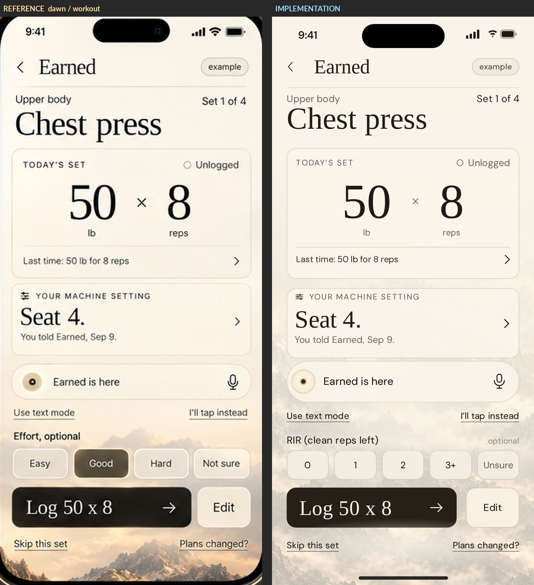
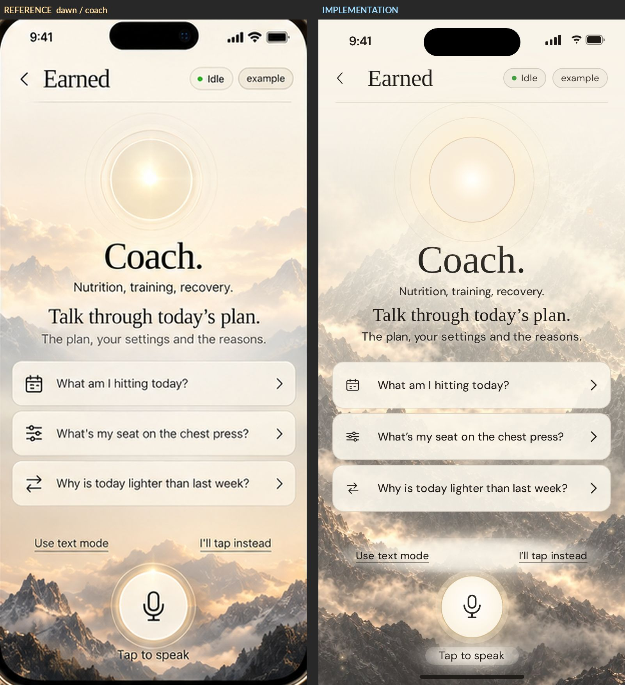
Aligned overlays
Orange is the reference, blue is the implementation. Where they agree the ink turns white. A colour fringe shows a displacement; its width is the error. Dawn views are inverted for the overlay so both themes read the same way.
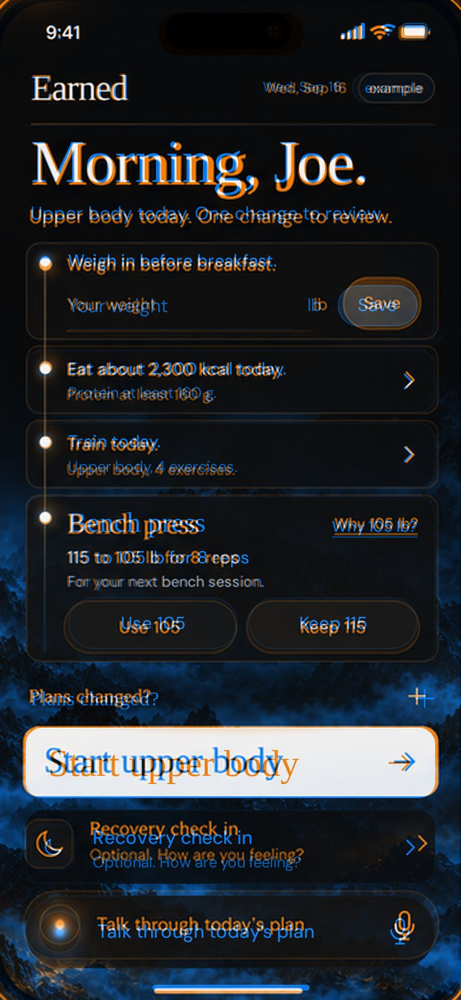
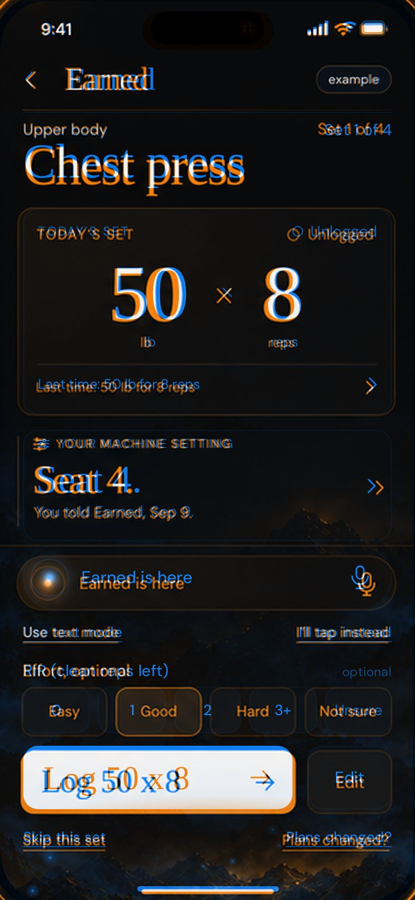
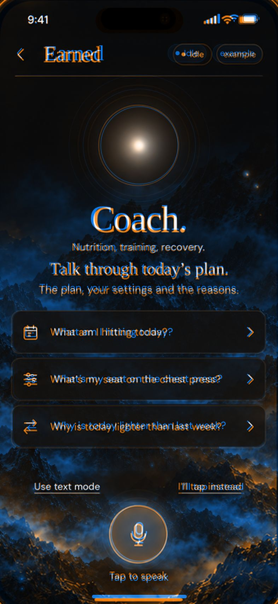
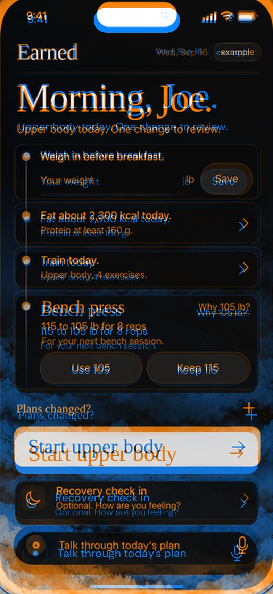
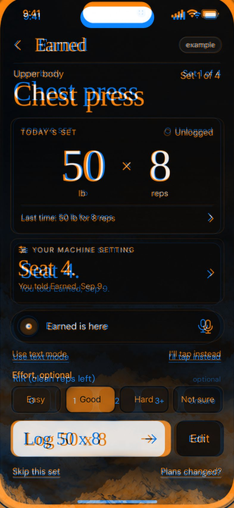
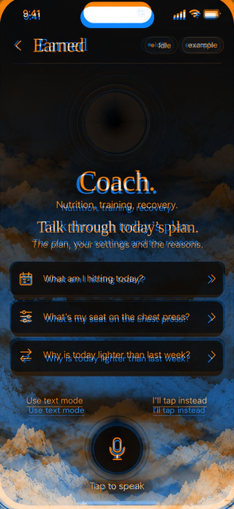
Fonts
The boards' serif is the Times design: Liberation Serif (the open, metric-identical Times New Roman twin) scored 0.69 against the board letterforms across eight samples; the next best, Newsreader, scored 0.58; Instrument Serif, the older design of record, 0.53. It is bundled as fonts/earned-serif.woff2. The sans is less certain. The design system of record names Lato, but the boards' letterforms (round single-storey g, geometric o, flag-only 1) match DM Sans best: 0.84 against 0.59 for Lato, 0.78 for Inter, 0.72 for Figtree across five samples. DM Sans is bundled as fonts/earned-sans.woff2 and used at weights 430 to 480, which is where the boards' text weight sits. This is a decision for you: adopt DM Sans as the sans of record, or keep Lato and accept the letterform difference.
Changes required by the product rules
- RIR picker instead of the effort scale. The boards show Easy, Good, Hard, Not sure with Good pressed. Your 2.4 ruling replaces that scale everywhere with 0, 1, 2, 3+, Unsure under the heading "RIR (clean reps left)". Nothing is preselected; tapping a chip again clears it (blank is unknown). The board's "optional" reads at the right of the heading.
- Weight input at 16 px (the board reads about 15 px) so iOS never zooms the field.
- Hit areas of 44 px behind the 35 px Save pill, the "Why 105 lb?" link, the "+" and the "Last time" row. The visible sizes match the boards; the invisible target is larger.
- Text never sits straight on the plate. The Coach links and "Tap to speak" carry a soft haze of the screen surface behind them; the workout's bottom links sit on the flat surface, which the Ink board also shows as flat black.
- Honest states. "Saved" appears only after the phone has stored the reading; 20 lb is refused with "Earned records 60 to 400 lb. Nothing was recorded."; a decision on the bench proposal is recorded with Undo; the fourth set ends the session and Today reflects it. Controls that reach beyond these six screens say so ("not wired yet", "not in this delivery yet") instead of pretending.
- The date and greeting are live in the app (today's date, Morning / Afternoon / Evening). The review pins "Wed, Sep 16" to match the board.
Where the boards and the design system disagree (kept the boards, needs your ruling)
- "Use text mode" and "I'll tap instead": design system 2.3 says never "I'll tap instead" (it wants "Type instead", "Log by tapping", "More questions"); the Sept 12 brief lists "I'll tap instead" as vocabulary to keep. The boards' copy stands until you rule.
- The bare "+" after "Plans changed?": the design system wants a named link (Adjust). The board's "+" stands, with an accessible label.
- "Use 105 / Keep 115" paired decision buttons: the design system's gold card states the number with Undo; the product's proposal path needs a yes, which the pair provides. The board stands.
- Sizes above the design-system tokens: greeting 52 (token 44), wordmark 30 (27), Start 60 tall (54), talk pill 62 (46), numerals 74 (66), Log 60 tall (56). The boards govern appearance.
- Embers: the design system says none; your instruction permits embers as the only animation. They drift in the exposed scenic band and hold still under reduced motion.
Mountain treatment, changed on your instruction
The boards keep the top of each screen flat and let the range in only at the bottom. On 2026-09-17 you asked for the scene to run the whole way, done as a design team would. The default is now "Full": the plate runs edge to edge under a graded wash (55% at the top to 25% at the bottom on Today and Coach, 94% to 78% inside the workout, the design-system numbers), the sky above the range is extended from the plate's own top edge behind the header block, cards are 86% so the range reads through them, and any text line that is not in a card carries a feathered scrim of the surface. "Strong" and "Soft" remain on the review page switch. This is the one place the implementation departs from the boards on purpose.
Workout and organization polish, changed on your instruction
Later on 2026-09-17 you asked for the workout screen to look better and then for an organization pass. Workout: a lighter wash with the range beginning under the set card, the set card lifted with a faint warm glow behind the numerals and a gold ×, the machine card stepped back, chips and links quieter. Organization: one spacing scale for the whole app (8 inside a group, 12 between related blocks, 14 to 16 around the primary action), one inner edge for every card (14 px), one chevron column (16 px from the right edge, the "+" and the mic centred on it), the Talk pill on the same icon column and text edge as the row card above it, the coach prompts on the page margin instead of 4 px outside it, and the Log row on the RIR chips' five-column grid so Edit lands under Unsure. Positions move by at most 10 px from the boards; nothing changes size, colour or copy.
Then, for gym use, the workout screen was reordered: the numbers, the machine setting, RIR, Log and the two set links now run in the order you do them, and the coach pill with its two links moves to the foot of the screen, where it sits on Today. Log rises about 100 px, into the first viewport on every phone size tested (360 × 780 and up). Four small dots beside "Set 1 of 4" show done, current and remaining sets. Later the same day the Log row moved directly under the set card (the action sits with the numbers it confirms), RIR follows it, and the machine setting became a row card like Recovery on Today ("Seat 4." with "Machine setting. From you, Sep 9." and a chevron), so the screen ends about 45 px higher. Then, on the thumb question, Log went back to the bottom: numbers → machine row → coach pill → RIR → Log → set links. The numbers are read at arm's length; Log is tapped by the thumb, and it now sits at 78 to 85% of the screen height on a 393 × 852 phone. The boards place the coach pill between the machine card and RIR; this is the one order change, and it is reversible.
Top of Today (your question, 2026-09-17): the flat fill above the greeting is replaced by a haze. The plates gained 420 px of synthesized sky above their real top edge (plate-ink-tall, plate-dawn-tall; the range sits exactly where it did, measured), the veil at the top lets about a tenth of the sky through, the range begins to show one card earlier and arrives at the same point as before (46%), and the greeting drops its heavy shadow. On your review it was opened one more step: about a fifth of the sky at the top, the range in by 44%. ?top=solid shows the previous flat top for comparison.
Design audit, on your "go" (2026-09-17): pressed states on every tappable surface (instant, no transition, so nothing animates); the bottom safe area reserved for the home indicator when the app is installed; the Log label uses the same × as the set card; and the tertiary links (Skip this set, Plans changed?, Use text mode, I'll tap instead, Why 105 lb?) lose their underlines and read as muted app text with the same 44 px targets. The boards draw those underlines; this is a deliberate departure.
Quality system and independent review (2026-09-17): a written standard (quality/STANDARD.md), an automatic gate (quality/gate.py: 131 checks across three phone sizes and both themes, including contrast measured behind the text, seams, pressed states, columns and a visual baseline), a phone-zoom sheet for review at the scale a phone shows, and an independent second-model review told to disagree. From that review: a Dawn Coach orb with its own recipe; the Talk pill's Dawn ember made bright; "Plans changed?" made a real button in the tertiary link style; Edit set apart from the RIR chips; the timeline rail centred on its dots, behind the cards, ending at the last dot; set-progress dots by fill; coach prompts in the same row-card component as Recovery (34 px disc, shared columns); Save in the primary treatment; "Use 105" with a gold edge as the proposed option; the Ink mic in the primary treatment; chips at 14 px radius. Departures from the boards among these: Save's fill, the gold edge, the coach prompt discs, the sans "Plans changed?".
Today, a little less mountain (2026-09-17, on a second opinion in the house): the range arrives fully by 52% instead of 44% and carries a touch more wash, so the plan cards sit on calm ground and the scene holds the bottom third. Coach and the workout are unchanged. ?mountain=more restores the previous Today.
Scene of record, 2026-09-17 evening: Strong. After seeing the three treatments side by side you chose the Strong fade: a flat top, the range low and heavy, long dissolves. It is rebuilt on the current machinery (tall plates, scrims, occlusion mask, pressed states, the quality gate), with its numbers expressed as shares of the screen so it holds on every phone size. The open scene remains on the review page switch as "Full". The Today "a little less mountain" and "top of Today" variants applied to the open scene and are superseded by this choice.
Coach mic, Ink: the cream primary treatment from the review round read as a white spot on the Strong scene; it is now a dark ember disc with a gold ring and a warm inner glow, one step richer than the original so it still leads the prompts. Dawn unchanged.
One world (2026-09-17, on the question "does it still look like two apps?"): yes, a little. Strong keeps its low, heavy range, but the flat top is no longer a dead fill: about 8% of the sky reaches the top of every screen and the dissolve is continuous from the header down, so the form and the landscape read as one place. To make that possible without an edge, the plates carry 700 px of synthesized sky above the picture (was 420).
The line (2026-09-17, "now there's a line"): found and fixed at the root. The mist's occlusion mask (which hides far mist behind rock) was being built from the plate's old geometry because a variable was declared after its first use, so the mask stepped from open sky to masked exactly at the picture's old top edge (Today 380 px, the workout 430, Coach 250). Under the solid top that edge was hidden; once the top became translucent it showed as a faint straight line in the mist. Fixed; the mask now follows the tall plate. Also added: a static 3 to 4% grain over the surface to keep long shallow gradients from banding on OLED, a longer eased ramp where the mist clears the header, and a gate check that draws the mist and looks for straight steps in the page margins.
Vertical lines on Coach (2026-09-17): the fix for the horizontal line continued the mist mask upward column by column, so the bright peak under the join painted light pillars into the sky above it. The mask now continues upward as one value per row. The synthesized sky on the tall plates was also rebuilt without any column structure. A gate check now measures vertical streaking in the sky with the mist drawn.
Design lead's last three (2026-09-17, on "Go"): the Coach state pill appears only while listening or answering, never "Idle"; the header hairline is gone (the space does the separating; geometry kept); the wordmark stays on Today and inner screens carry the back arrow and their own title, so the name no longer jumps when you navigate. The boards draw the hairline and the wordmark on every screen; these are deliberate departures.
Coach header, two lines (your ruling, 2026-09-17): "Coach." and "Talk through today's plan." The scope line and the "what you can ask" line are gone; the prompts show what you can ask, and they start about 37 px higher. Prompts set at 14 px so all three sit on one line at 393 wide.
Coach, more minimal (2026-09-17): idle shows the orb alone and the two outer rings return only while listening or answering; the prompt rows lose their chevrons (they are questions to ask, not places to go). The boards draw the rings and the chevrons at rest; deliberate departure.
The state inventory, on your "go" (2026-09-17): every state from the derived inventory is now drawn on the live prototype (99 Today, 45 Workout, 65 Coach: 209, both themes) and browsable at states.html. Three rulings are recorded in the inventory: the "98" is unsourced and the derived list is the record; the coach's structural states are designed now and its answer variants are copy on one card; the proposal card gets a real accept path. Two departures from the boards follow from the rulings and an independent review. First, the proposal card on Today is now the same component as every other proposal: the eyebrow "One call needs you" sits in the head row with "Why 105 lb?", the serif line carries the change ("Bench press, 105 for 8"), the reason is the producer's own and ends with the fixed sentence "Nothing changes until you say yes.", the gold edge marks only a card that still needs an answer, and a decision records as "You said yes. It applies when your plan is next built." or "You said no. Nothing changes." with "Change my answer" beneath (the board's "Use 105 / Keep 115" pair and the card's place in the timeline are unchanged). Second, the workout's effort row loses the board's "optional" tag and Log now refuses without an answer ("Choose clean reps left, or Unsure."), because the ledger requires an effort answer on every set (W-20) and "Unsure" is one. Also from the review: the only state colour is the ember gold ("Logged" and the coach pill dot were the app's one green); a disabled primary is a flat chip with a muted label, never a translucent plate; every sub screen gets the workout's back chevron, a flat surface behind its whole text column, and its action group at the parent screen's own thumb edge (Today 695, Workout 712); refusals are one bordered block that sits under the field it names and flags it; the device and provenance line sits under the screen's status line, not above the greeting.
Your three calls (2026-09-18): Today's bottom stack is now fixed. Start, the Recovery row and the Talk pill sit at the bottom safe area and never move; the day above them scrolls in its own region and softens where it slides under the status bar and into the stack, only while there is more to see. On the board as drawn the day fits exactly, so the default is unchanged to the pixel. The weigh-in stays the board's inline card (the inventory's sheet is not drawn). "Skip this set" is gone from the workout screen until a skip exists in the engine; the "skipped" state stays drawn in the inventory so the control can return.
Final review round (2026-09-18, a fresh reviewer told to disagree): the chassis rule now holds on every screen and every sub screen, not only Today's face. Workout and Coach have the same fixed stack as Today (the effort row, Log and Edit, the bottom link; the text input, the two links and the mic), each at the exact height its board draws it, with the rest of the screen scrolling above and fading at the edges it slides under; the boards as drawn are unchanged to the pixel. Every sub screen (Why this plan, the nutrition and sleep entries, the machine editor, the coach opt-in, the stubs) is a scrolling body with its action group fixed at the parent screen's thumb edge, and its flat backing eases in from the header so the Dawn seam is gone. The proposal card's eyebrow names its state once answered ("Your call", "Applied", "Withdrawn") and keeps the change line in every state. A refusal flags the field it names on the workout too (the effort row, the empty reps box, a malformed settings pair), and the drawn refusal is the same element the live tap inserts, with Log unmoved. When the microphone cannot work the disc is gone and "I'll tap instead" is the decision. The coach's header pill goes dark once a card is on screen. The Coach link row lost its full-width plate. Three primary labels were shortened to hold one line ("Review the workout", "Why it cannot open", "Close the workout"); the other copy departures from the inventory's verbatim list are: "Log today's weight" (one line), "Start set 2" and "Finish this workout" (the readiness-word rule), "Calories eaten" / "Protein eaten" restored to the verbatim, "Recovery check in" everywhere, "How are you feeling?" on the workout's Recovery row (no "optional" on a set screen), "Saving sleep" without an ellipsis, "Edit these settings" for the machine panel's action, and the T-05 cause carried in the quiet line under the status line rather than as a colon chain.
The Dawn plate (2026-09-18): you sent the Dawn board's own photograph and it did check out as that board's background (same size, matching pixel for pixel in the margins around the phones). It was installed for a few hours, then you ruled that Dawn is the same mountains as Ink, only lighter: one scene in two lights. So the Dawn plate is the Ink photograph graded light, at the Ink geometry, as it was before; the Dawn board's own photograph (a different range, with pines) is kept under assets/retired and is not the design. This is a deliberate departure from the Dawn board's background, on your word.
Remaining mismatches, measured
| Where | Difference | Why it stays |
|---|---|---|
| Start and Log labels | The boards' serif labels are about 10% narrower than Times at the same cap height ("Start upper body" is 199 px wide at a 23 px cap height; Times gives 239 px). Set at 32 / 31 px as a compromise: a little shorter than the board, the same width. | No real font has both the board's height and width; the board's glyphs are condensed by its renderer. |
| Machine setting, Ink | The Ink board draws it as a flat section with a left rail; the Dawn board draws a bordered card. Built as a card in both. | One component, two themes. Say the word and Ink gets the rail. |
| Dawn mountains | The Dawn plate is derived from the Ink plate (lifted, hazed, warmed). The Dawn boards show a different render: snow peaks, orange sunrise. The bottom of the Dawn views is lighter and cooler than the boards. | No Dawn plate was supplied. Send one and it drops in. |
| Ink workout, right edge | The board's peak silhouette pokes up beside "Seat 4."; the card covers it. | Follows from the card decision above. |
| RIR chips | Five chips at 63 px each against four at 78 px. | Follows from the RIR ruling. |
| Coach orb | The two outer rings read slightly harder than the board's diffuse rings; the bright disc is within 4 px. | Cosmetic; can be softened with a blur if you want it. |
| Today text inset | The Today board sets the header, greeting and status line about 4 px further in than the cards; the workout board does not. Matched per screen. | Faithful to each board. |
| Weight and status text | Text weight sits at 430 to 480 on the variable font, between Regular and Medium. | Closest match to the board's rendering. |
What was missing
The 98-state inventory is not in the repo (rebuild/) and not on either canvas: "Earned — Screens" holds 15 boards and the design system README has no state list. The six reference views did not need it. Before the design is extended across the inventory, point me at the file or the chat that holds it; I did not manufacture a replacement.